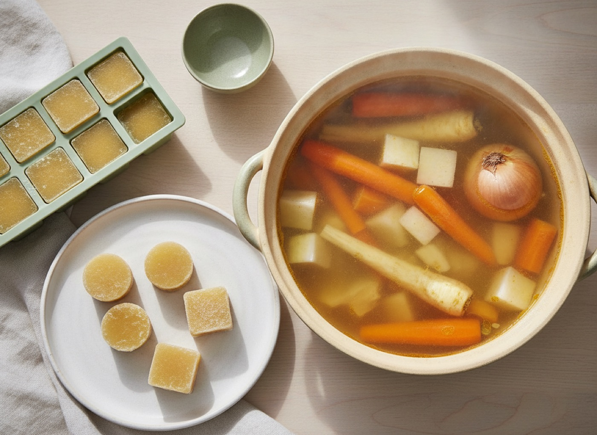

Egyik sem tiltás, hanem csere: ugyanaz a szerep a tányéron, csak élesztő és tejfehérje nélkül. Ahol szám van, az mért adat a 2. szakasz táblázatából; a konkrét termék csomagolása felülírja.

Lepény a kenyér helyén, házi alaplé a leveskocka helyén: ez a két csere pótolja a legnagyobb hiányt.
| Ehelyett | Ezt | Megjegyzés |
|---|---|---|
| kenyér, zsemle, kifli, bagett | élesztő nélküli lepény (alaprecept A) | 20 perc, 4 db, fagyaszthatós |
| kovászos kenyér | ugyanaz a lepény | a kovász élesztőt tartalmaz |
| pirítós reggelire | serpenyőben átmelegített lepény, natúr puffasztott lap | |
| szendvics, wrap, tortilla | lepény feltéttel, vagy salátás doboz | |
| pizza | lepényalapra paradicsom, zöldség, sült hús; sajt helyett tahinis-citromos öntet | |
| zsemlemorzsa, panír | darált mandula vagy dió, kukoricadara, polenta | sütőben szép kérget ad |
| zsemlekocka a levesben | pirított tökmag, pirított szezámmag, sült burgonyakocka | |
| müzliszelet, granola | olajos mag + gyümölcs, vagy zabkása | a bolti változatban tejpor is lehet |
| süteménytészta, kalács, briós | zabpelyhes-gyümölcsös sütemény sütőporral |
| Ehelyett | Ezt | Megjegyzés |
|---|---|---|
| leveskocka, húsleveskocka | házi alaplé (alaprecept B), kockákba fagyasztva | ez a konyha gerince |
| ételízesítő por | só + friss fűszer + pirospaprika + fokhagyma | |
| kész alaplé, kész szósz | saját alaplé, paradicsom, citrom, olívaolaj | |
| instant leves, krémleves-alap | zöldségkrémleves, lencsefőzelék | |
| chips, sós nassok | natúr puffasztott lap, olajos mag, olívabogyó, nyers zöldség | a fűszerezés az élesztőkivonat helye |
| szójaszósz, teriyaki, miszó | só, citrom, szezámmag, tahini | erjesztett termékek: kérdés a szakemberhez |
| Ehelyett | Ezt | Megjegyzés |
|---|---|---|
| tej | natúr, cukrozatlan, kalciummal dúsított szójaital | 3,55 g fehérje / 100 g (mért) |
| tej, ha a szója nem jön be | natúr, cukrozatlan zabital vagy mandulaital | a zabital kevesebb fehérjét ad: 0,8 g (mért) |
| joghurt, kefir | natúr szójajoghurt | |
| túró, krémsajt, kenhető sajt | fehérbab-krém, csicseriborsó-krém tahinivel, selyemtofu-krém | |
| tejföl a főzelékbe, a levesbe | szójajoghurt, kevés meleg főzőlével elkeverve | így nem csapódik ki |
| tejszín a krémleveshez | burgonyás sűrítés + egy kevés szójaital | |
| vaj a pürében, a kenyéren | olívaolaj, tahini, avokádó | |
| reszelt sajt a tetejére | pirított szezámmag, pirított tökmag, tahinis-citromos öntet | zsemlemorzsa nem jó: az kenyér |
| tejcsokoládé | kakaópor + gyümölcs; étcsokoládé csak tejmentes címkével | |
| tejes kávé | kávé natúr szójaitallal vagy zabitallal | |
| tejtermék a kalciumért | kalcium-szulfáttal készült tömör tofu, dúsított növényi ital | 683 mg vs. 32 mg / 100 g (mért) |
| Ehelyett | Ezt |
|---|---|
| vajas pirítós | lepény fehérbab-krémmel vagy avokádóval |
| croissant, túrós batyu, kalács | lepény, zabkása mandulával |
| kolbász, szalonna, felvágott | tojás, fehérbab-krém, sült hús hidegen |
| habos, tejszínes kávé | kávé natúr szójaitallal |
| bolti müzli tejjel | zabkása szójaitallal, maggal, gyümölccsel |
| Ehelyett | Ezt |
|---|---|
| rántott hús, bundázott hal | sütőben sült vagy grillserpenyős filé; ha kéreg kell, darált mandula vagy polenta |
| leveskockás alaplével készült leves | házi alaplével készült leves |
| tejszínes mártás | paradicsomos, citromos vagy szójajoghurtos öntet |
| tejföllel habart főzelék | szójajoghurttal habart főzelék |
| sajtos besamel | szójaital + liszt alapú besamel olívaolajjal |
| majonézes saláta | mustáros-citromos vagy szójajoghurtos öntet (a mustár címkéjét nézd meg) |
| rakott étel sok sajttal | zöldséges rakott étel selyemtofu-krémmel, tetején pirított maggal |
| kenyérrel tálalt fogás | lepénnyel, rizzsel, burgonyával, polentával |
| bolti humusz, mártogatós | csicseriborsós dip tahinivel |
| Ehelyett | Ezt |
|---|---|
| chips, sós keksz | natúr puffasztott lap, olajos mag, olívabogyó, nyers zöldség |
| vajas-krémes sütemény | selyemtofus-gyümölcsös pohárkrém (sült alma selyemtofuval krémje) |
| fagylalt, jégkrém | fagyasztott bogyós szójajoghurttal, villával összetörve |
| kekszes-tejszínes desszert | szójajoghurtos bogyós pohár maggal |
| péksütemény útra | lepény, sült alma, gyümölcs, egy marék mandula |
| Ehelyett | Ezt | Megjegyzés |
|---|---|---|
| tejcsokoládé, fehér csokoládé | tejmentes, magas kakaótartalmú tábla (címke!) | a tejcsokoládé definíció szerint tejszárazanyagot tartalmaz |
| csokis-tejszínes krém, pudingos desszert | avokádós csokikrém | a krémesség az avokádóból van |
| bolti brownie, csokitorta | lisztmentes babos brownie | a bolti sütemény lisztes és tejes |
| müzliszelet, csokis szelet, útravaló keksz | csokis zabgolyó | hűtőben egy hét, fagyasztóban hónapok |
| fagylalt, jégkrém, parfé | fagyasztott banános „jégkrém” | tejpor és tejszín nélkül |
| csokiba vont desszert, bonbon | csokiba bújtatott banánfalatok | ugyanaz a mozdulat, tejmentes csokival |
| kenhető csokis-mogyorós krém | tahini vagy mogyoróvaj + kakaópor + méz | a bolti változatban tejpor és savó van |
| vajas crumble, pite, morzsasüti | zabos crumble olívaolajjal (crumble) | a vajat az olaj váltja, ugyanúgy morzsás |
| „instant kakaó” tejjel | cukrozatlan kakaópor natúr szójaitallal | az italporok gyakran tejporosak |
| mikrós bolti süti-keverék | bögrés csokis süti | hét perc, sütőporral, élesztő nélkül |
 Könnyű Konyha
Könnyű Konyha